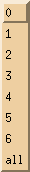
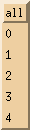

Holger.Kiehl@dwd.de
Last updated: 22.07.2007
![[red dot]](../images/reddot.gif) IndexHome
IndexHomeThe show_log dialog was designed to continuously show all activities in the given (system, receive, transfer or transfer debug) log file. Even when a log file is full and a new one is opened show_log will notice this and continue to show the newest information. It is also possible to view just a certain log level for example only errors and warnings.
System log and Receive log do look similar only that the receive log will have one less toggle button as shown below (top is receive log bottom system log:
| 1 | Toggle area to select the information that should be displayed. It
is not necessary to press the update button for the selection to
become active.
|
|||||||||||||
| 2 | Enter a word to search for in the shown text. If you press return it will automatically jump to the position in the text and show it. If you press return again it will search for the next occurrence. It always starts at the top and when it hits the bottom wrap around and starts from the beginning. | |||||||||||||
| 3 | Here it is possible to select an older log file for viewing. After selecting the log number the update button must be pressed for the selection to become active. Note with the choice <all> it will display all log files. The number of logs to choose from depends of what has been configured in AFD_CONFIG for MAX_RECEIVE_LOG_FILES or MAX_SYSTEM_LOG_FILES. |  | ||||||||||||
| 4 | The number log entries found. |
Transfer log and Transfer Debug log do look similar only that the transfer log will have one less toggle button as shown below (top is transfer log bottom transfer debug log:
| 1 | Toggle area to select the information that should be displayed. It
is not necessary to press the update button for the selection to
become active.
|
|||||||||||||
| 2 | Since files can be transmitted in parallel, it can be confusing if more then one process is shown at the same time. |  | ||||||||||||
| 3 | Enter a word to search for in the shown text. If you press return it will automatically jump to the position in the text and show it. If you press return again it will search for the next occurrence. It always starts at the top and when it hits the bottom wrap around and starts from the beginning. | |||||||||||||
| 4 | Here it is possible to select an older log file for viewing. After selecting the log number the update button must be pressed for the selection to become active. Note with the choice <all> it will display all log files. The number of logs to choose from depends of what has been configured in AFD_CONFIG for MAX_TRANSFER_LOG_FILES or MAX_TRANS_DB_LOG_FILES. | |||||||||||||
| 5 | The number log entries found. |
|
Copyright © 1997 - 2007 by H.Kiehl Holger.Kiehl@dwd.de Last updated: 22.07.2007 |
Index |
Home |